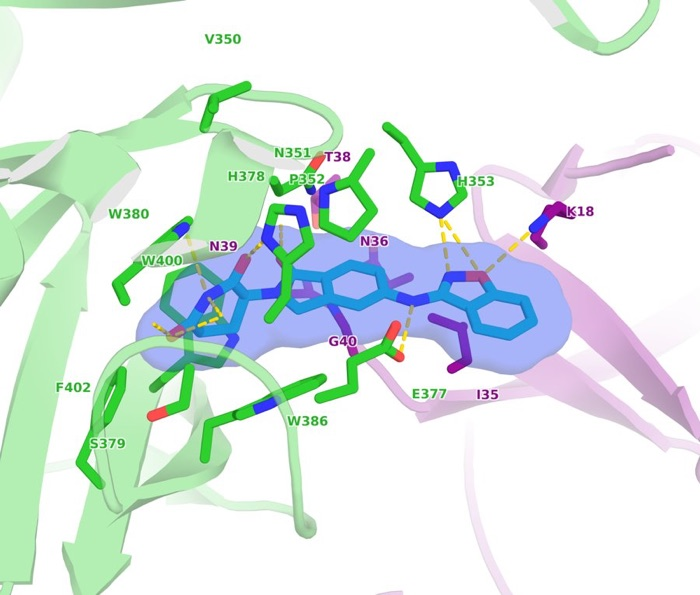
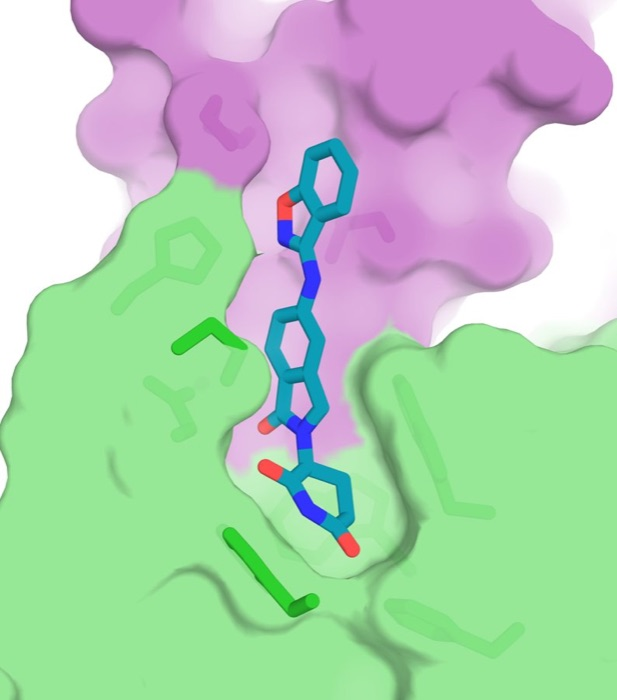
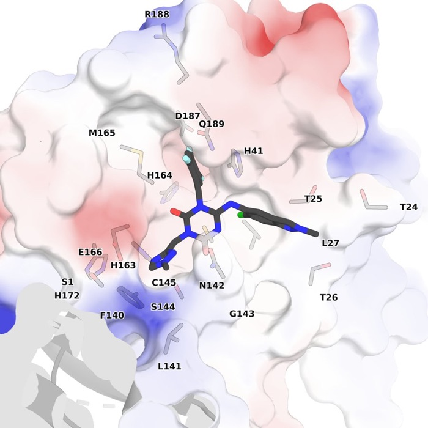
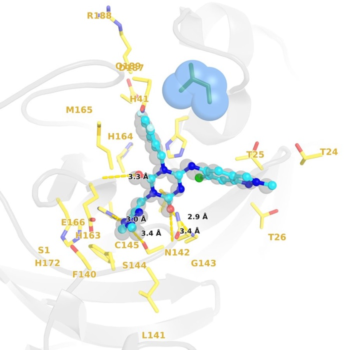
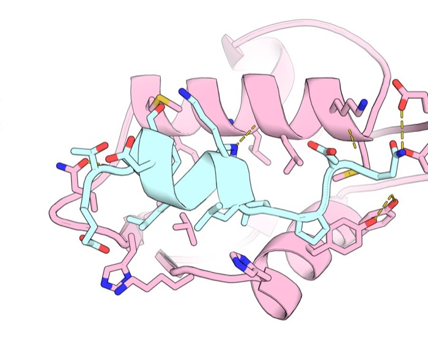
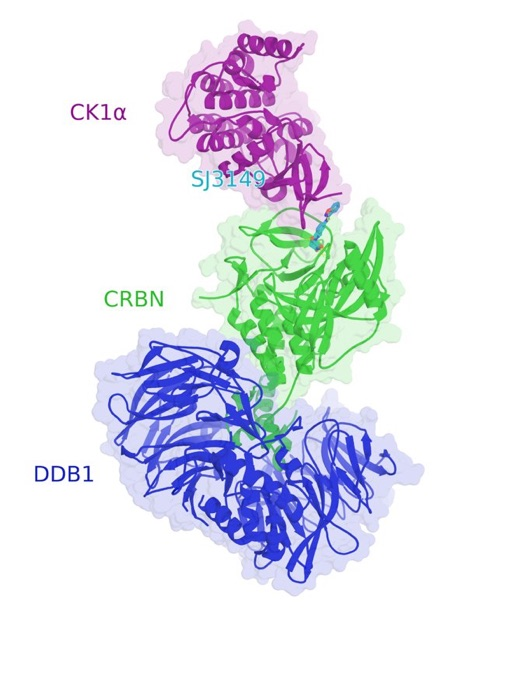
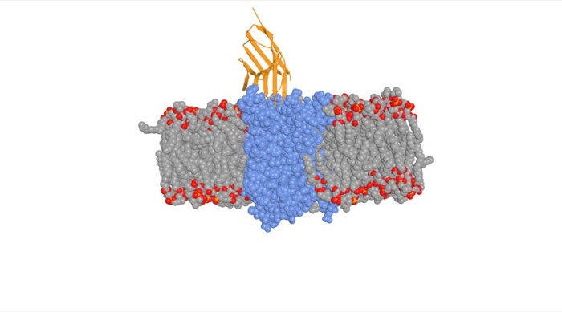
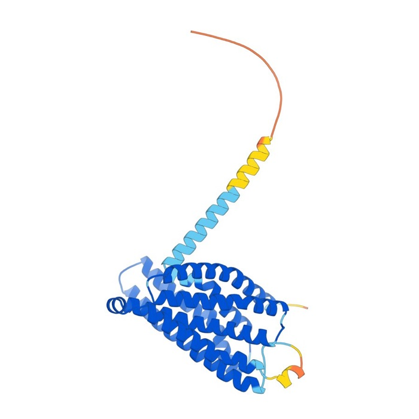
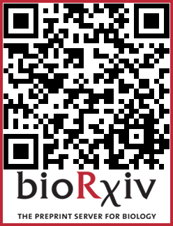

Resources
Open-source tools I have developed for computational biophysics and structural biology.
PROTFIG
Publication-quality biomolecular figures with one command.
PROTFIG runs PyMOL in the background and turns a structure (a PDB/mmCIF file, a PDB code, or a PyMOL session) into a finished figure panel. You choose a style, a preset, and PROTFIG detects the ligand or binding partner, selects the site residues, finds hydrogen bonds, places the labels, and orients the camera.

site · 8G66
pocket · 8G66
electrostatic · 8DZ0
site_faded · 8DZ1 M49I
interface_closeup · 1YCR
overview · 8G66
membrane · 3P0G
plddt · AlphaFold modelAs simple as one line
protfig 8G66 --preset site --chains B,C,A # ligand binding site
protfig 1YCR --preset interface_closeup # protein–peptide interface
protfig my_protein.pdb --preset illustrative --bg transparent # your own file
protfig --list # see all 19 presetsEach figure comes with a 300 dpi image, the PyMOL session to fine-tune it by hand, editable SVG labels, and text files listing the site residues and hydrogen bonds.

Read the preprint
Chi, L. A. (2026). PROTFIG: one-command, publication-quality biomolecular figures. bioRxiv.
doi:10.64898/2026.10.20.760606
Get the code on GitHub → · MIT license
Last updated: October 2026